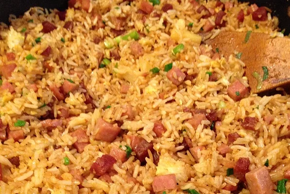

Fried Rice

"Everyone in Hawaii has their own version of fried rice. This is my own version of fried rice that the locals ate in Hawaii. "
Ingredients
- 1 ½ cups uncooked jasmine rice
- 3 cups water
- 2 teaspoons canola oil
- 1 (12 ounce) can fully cooked luncheon meat (such as SPAM®), cubed
- ½ cup sliced Chinese sweet pork sausage (lup cheong)
- 3 eggs, beaten
- 2 tablespoons canola oil
- 1 (8 ounce) can pineapple chunks, drained
- ½ cup chopped green onion
- 3 tablespoons oyster sauce
- ½ teaspoon garlic powder
Steps
- Bring the rice and water to a boil in a saucepan over high heat. Reduce heat to medium-low, cover, and simmer until the rice is tender, and the liquid has been absorbed, 20 to 25 minutes. Let the rice cool completely.
- Heat 2 teaspoons of oil in a skillet over medium heat, and brown the luncheon meat and sausage. Set aside, and pour the beaten eggs into the hot skillet. Scramble the eggs, and set aside.
- Heat 2 tablespoons of oil in a large nonstick skillet over medium heat, and stir in the rice. Toss the rice with the hot oil until heated through and beginning to brown, about 2 minutes. Add the garlic powder, toss the rice for 1 more minute to develop the garlic taste, and stir in the luncheon meat, sausage, scrambled eggs, pineapple, and oyster sauce. Cook and stir until the oyster sauce coats the rice and other ingredients, 2 to 3 minutes, stir in the green onions, and serve.
Per Serving: 511 calories; protein 17.1g; carbohydrates 48g; fat 28.1g; cholesterol 132.7mg; sodium 988.1mg.
Return to main